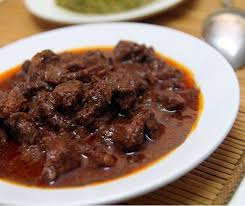

Jika masakan Sumatra di daerah lainnya banyak menunjukkan pengaruh seni memasak asing, seperti masakan Minangkabau, Melayu, dan Aceh menampilkan masakan jenis kari yang kental dipengaruh seni memasak India dan Arab, maka masakan Batak lebih menampilkan tradisi memasak asli suku bangsa Austronesia. Misalnya memasak daging babi bersama dengan darahnya, juga dapat ditemui dalam tradisi masakan Filipina, yaitu dinuguan. Sementara, sejak banyaknya suku bangsa Nusantara yang masuk agama Islam, maka seni memasak yang tidak halal, seperti menggunakan daging babi, anjing, atau darah, telah ditinggalkan dan lenyap, dan kini hanya bertahan di wilayah budaya non-Muslim seperti di Tanah Batak.
Kebanyakan orang Batak kini beragama Kristen, karena itulah tidak seperti suku di sekitarnya (seperti Aceh dan Minangkabau), kebanyakan hidangan Batak tidak dibatasi oleh aturan halal.[2] Daging babi, darah dikonsumsi dalam tradisi kuliner Batak. Banyak makanan terbaik daerah itu dibuat dari daging babi, serta makanan yang terbuat dari bahan-bahan yang tidak biasa, akan tetapi ada juga hidangan-hidangan halal.
Saksang merupakan salah satu makan tradisional yang berasal dari masyarakat Batak Toba di daerah Toba Samosir dan Tapanuli Utara, Sumatera Utara. Masakan Batak adalah salah satu jenis masakan Nusantara. Salah satu ciri masakan batak adalah kegemarannya menggunakan andaliman (Zanthoxylum acanthopodium) sebagai rempah utama. Karena itulah Andaliman kadang dijuluki sebagai "merica batak".
Makanan napinadar biasanya disajikan kepada seseorang yang sedang bersukacita, misalnya acara pernikahan, melahirkan, pemberangkatan kuliah, dan masih banyak lagi.Bagi kepercayaan suku batak sendiri, pemberian makanan ini kepada seseorang diharapkan mendapatkan kesehatan dan berkat yang melimpah kedepannya.
Saksang dalam masyarakat Batak merupakan sajian istimewa. Menu wajib dalam acara-acara adat atau prosesi pernikahan adat Batak. Kini saksang menjadi masakan umum. Bisa ditemukan di berbagai kedai makan-minum tradisional Batak atau disebut lapo. Lapo bahkan ditemukan di berbagai daerah tanah air terutama di kota-kota besar. Selain campuran darah, saksang juga diolah hanya dengan bumbu-bumbu rempah yang kaya. Saksang juga ditambahkan dengan santan sehingga menciptakan rasa gurih. Ada juga penggungaan bumbu khas Batak yaitu andaliman.
semoga bermanfaat
Indonesia , Tobasamosir , Jl.P.I.Del,Sitoluama,Lagu Boti.